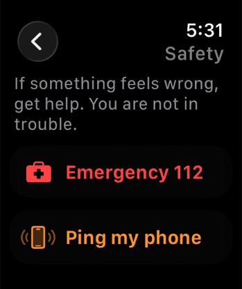

Español
Cómo funciona
Una noche entera, del primer plan a la mañana siguiente. Las promesas que cumple la app, y todo lo que lleva dentro de verdad.
Cómo encaja
Una noche, en tres momentos.
Antes de salir
Decide mientras es fácil
Pasa la mezcla por el comprobador de riesgos. Deja claro qué te apetece y qué no. Pon un temporizador de check-in. Cinco minutos, mientras tienes la cabeza clara.
Mientras estás fuera
Un toque, sin escribir nada
El temporizador pregunta si estás bien. «Pedir ayuda» ya conoce a tu contacto de confianza. Y sabe el número de emergencias de donde estés. Tu reloj puede contestar por ti.
La mañana siguiente
Apúntalo mientras lo tienes fresco
Sueño, cómo estás, qué ayudó de verdad. Un minuto ahora es lo que agradecerás dentro de tres meses.
Promesas
Con lo que puedes contar
Cinco promesas. Por eso puedes escribir aquí lo que sea sin preguntarte quién más lo está leyendo.
- Los hechos, nunca un veredicto.Te enseña qué se sabe de una mezcla y te deja a ti la decisión. No conoce tu cuerpo, ni tu dosis, ni tu noche.
- Nunca te pone nota como persona.Hay un número para el día. Se queda en tu teléfono. No bloquea nada, no te quita nada y no te juzga.
- Cada recordatorio lo enciendes tú.Todos empiezan apagados. Enciende los que quieras y redáctalos para que la pantalla de bloqueo no delate nada.
- Nunca tendrás que crearte una cuenta.Una cuenta necesita un servidor. Un servidor es una copia de ti en un sitio al que tú no llegas. Así que no hay ninguna de las dos cosas.
- Es gratis, y seguirá siendo gratis.Todas las funciones, para todo el mundo. La propina opcional no desbloquea nada, porque una herramienta de seguridad tras un muro de pago ayuda a quien menos la necesita.
¿Te suena?
Si te ves en alguna de estas, es para ti.
- Quieres recordar bien lo de anoche, tú y nadie más.
- Tomas PrEP, la pastilla diaria que evita que contraigas el VIH. Y prefieres que tu pantalla de bloqueo no lo diga.
- Quieres dar señales de vida a alguien sin montar una conversación entera.
- Te has preguntado, entre semana, si es más a menudo que antes.
- Quieres el número de emergencias de donde estés, sin abrir el navegador.
Qué puedes esperar, para que nada te sorprenda. ChillMate no juzga una noche, no te pone nota como persona y nunca dice que una mezcla sea segura. Te cuenta lo que se sabe y confía en ti para el resto.
Qué lleva dentro
Registro privado
Apunta una noche como quieras recordarla: el sueño, cómo te sentiste y qué te ayudó después.
Tus patrones
Mira qué cambia de verdad a 30 y a 90 días, más una puntuación diaria que no verá nadie más.
Herramientas de cuidado
Respiración, una pausa cuando llega el impulso, un plan para una sesión más segura y una ruta a casa cuando la quieras.
Comprobador de riesgos
Avisos claros sobre mezclas, incluida la medicación que ya tomas.
Recordatorios que encajan
Temporizadores de check-in, una cuenta atrás para la PEP y recordatorios de pruebas, con palabras discretas si quieres.
En tu muñeca
Temporizadores, check-ins y un número de emergencias en el Apple Watch, sin sacar el teléfono.
Apple Watch
Funciona con el teléfono en el bolsillo
Temporizadores de dosis, avisos para beber agua, check-ins discretos y un ejercicio de respiración. Un toque llama a tu contacto de confianza o al número de emergencias local. Todo en el reloj, y además un acceso directo que puedes poner en la esfera.3
Si algo no va bien, busca ayuda. No estás en problemas.
La pantalla de Seguridad del reloj entera, con esas mismas palabras.

Puedes comprobar cada palabra de esto
ChillMate es de código abierto. Cada línea que toca tus datos es pública. Así que puedes comprobarlo, en vez de tener que fiarte de mí.
El código de la app no hace ninguna conexión a internet. Nada de analítica, nada de informes de fallos, ninguna URLSession por ningún lado. De tu teléfono solo sale lo que tú tocas.1
Funciona en tu idioma
La app y esta web están en inglés, neerlandés, alemán, francés y español. Los servicios de ayuda siguen al país que elijas, no al idioma en que lees. Son dos preguntas distintas.
Cada afirmación de esta página, y dónde comprobarla
- La sincronización va a tu propia base de datos privada.
ChillMateModelContainer.swift:81↩ - Se oculta al cambiar de app y durante las grabaciones de pantalla.
AppLockView.swift:26↩